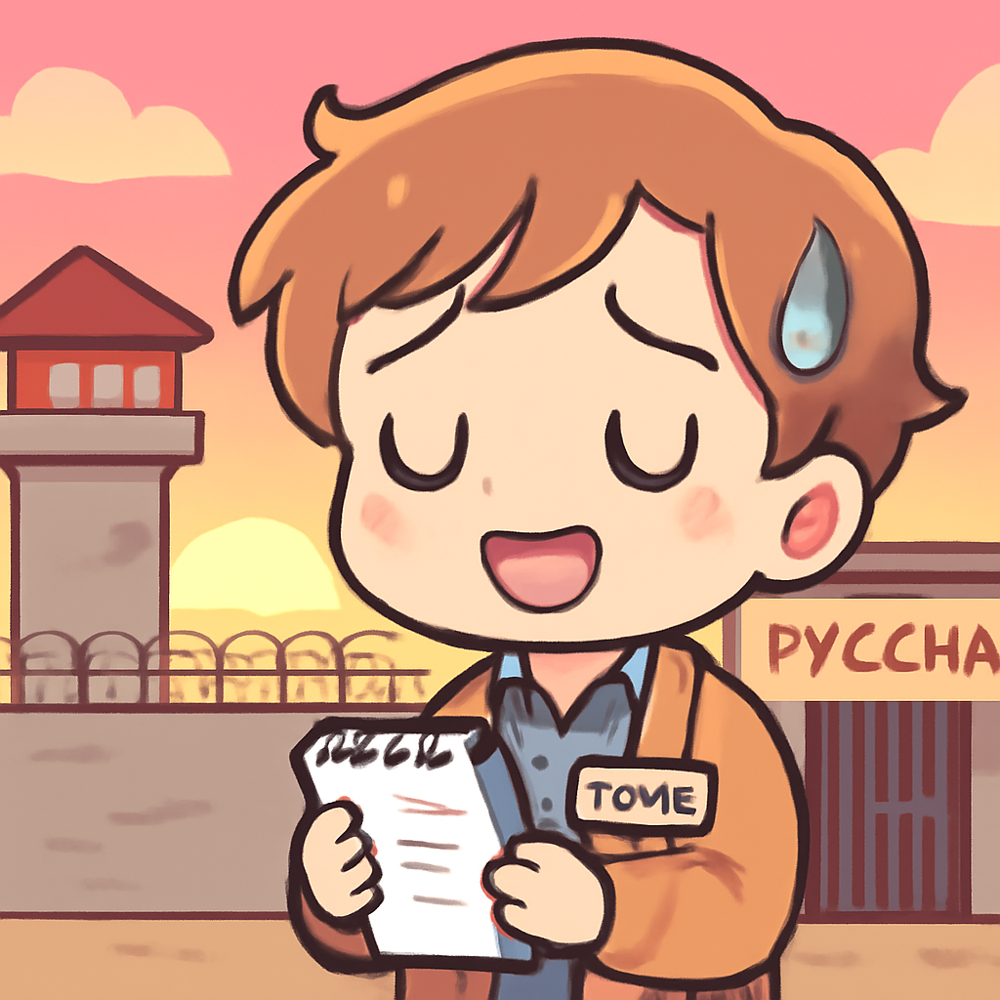
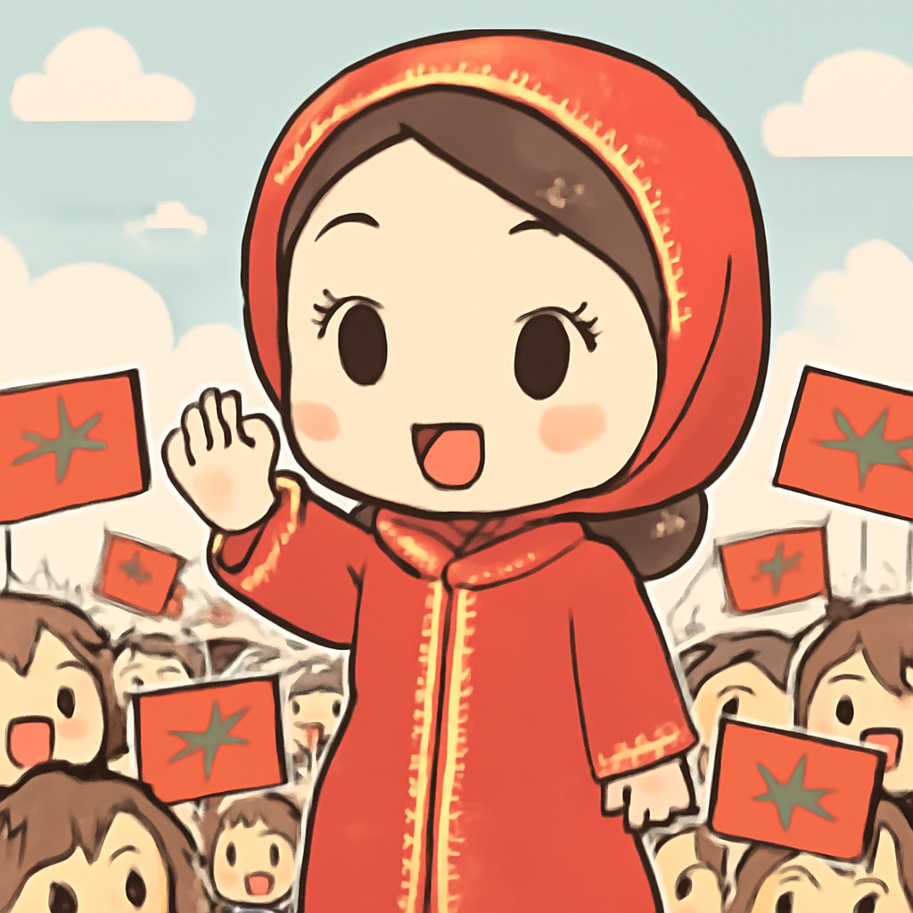
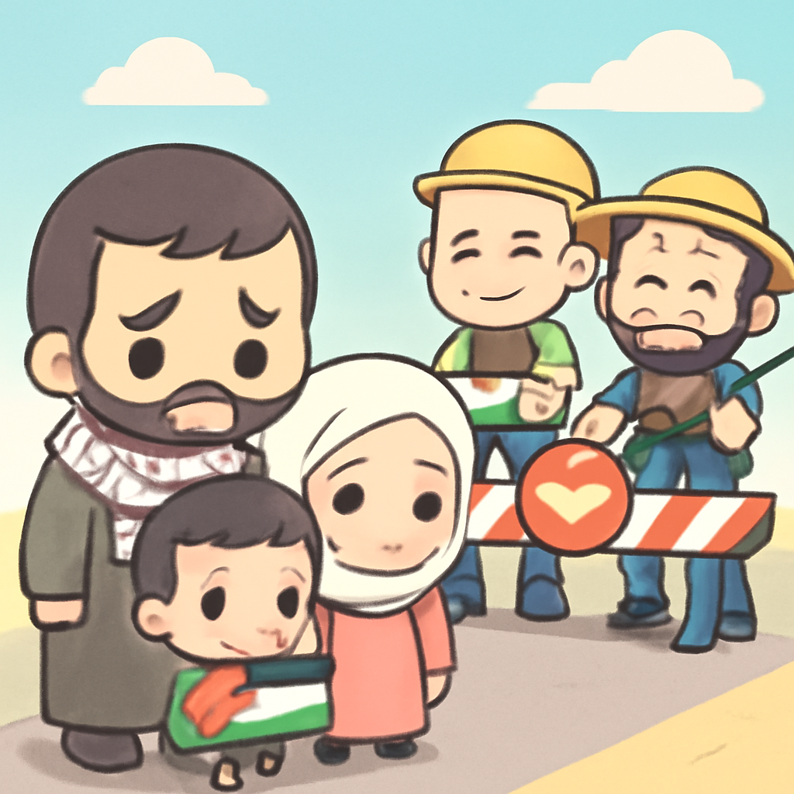

其一 · 俄羅斯 · 美國記者被囚16個月
美國記者在俄羅斯獲釋，談及囚禁經歷

在俄羅斯，曾被囚禁16個月的美國記者Evan Gershkovich，分享了他被捕的經過。他表示自己像是一枚棋子，完全不知情就被捲入了更大的政治鬥爭中。這個故事不僅關乎新聞自由，也讓我們重新思考言論的界限。真希望他在獄中有個好書可以讀。
🔗 原始新聞 ↗
2026-09-30 · 以古觀今，以笑抗愁
美國記者在俄羅斯獲釋，談及囚禁經歷

在俄羅斯，曾被囚禁16個月的美國記者Evan Gershkovich，分享了他被捕的經過。他表示自己像是一枚棋子，完全不知情就被捲入了更大的政治鬥爭中。這個故事不僅關乎新聞自由，也讓我們重新思考言論的界限。真希望他在獄中有個好書可以讀。
🔗 原始新聞 ↗
南非12名女性遇害，社會再次呼籲對女性暴力的關注
南非最近發生了12名女性被殺的悲劇，這引起全國人民的強烈反應。社會各界開始呼籲政府加強對女性的保護措施，以減少這種暴力事件的發生。這不僅僅是個別事件，而是反映了整個社會對女性安全的迫切關注。希望每位女性都能平安回家。
🔗 原始新聞 ↗
摩洛哥迎來首位女性總理，打破傳統界限

摩洛哥最近選出了首位女性總理，這在阿拉伯世界中是個重大進展。這位新總理的上任不僅象徵著性別平等的推進，也顯示出摩洛哥在政治上逐漸開放。希望她能在職位上帶來更多的改革和改變，讓我們也看到女性在政治舞台上更耀眼的身影。
🔗 原始新聞 ↗
烏克蘭市場遭空襲，造成重大平民傷亡
在烏克蘭的叛軍區，一場空襲襲擊了繁忙的市場，至少50人遇難。這是幾個月以來最致命的攻擊，讓人們再次感受到戰爭的殘酷。此事件不僅引發國際社會的譴責，也讓人們對當地民眾的安全感到擔憂。希望未來能有更多的和平，而不是這樣的悲劇。
🔗 原始新聞 ↗
以色列定居者阻擋巴勒斯坦家庭返家，局勢升溫

在西岸，以色列定居者阻止了一個巴勒斯坦家庭返回他們被迫離開的家園。儘管以色列高等法院已下令軍方協助，但定居者的行為卻未受到足夠的制止。這讓人擔心，磋商和平的希望似乎依然遙遠。也許有一天，這片土地會真正迎來和平的曙光。
🔗 原始新聞 ↗